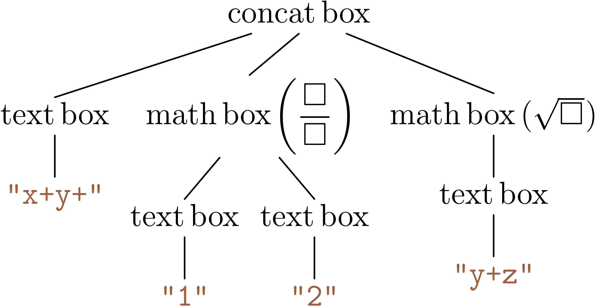

Content Model: From tree to
boxes
|
The Typesetter converts the TeXmacs tree into graphical Boxes, which
contains rendering and other auxiliary information. e.g. physical
bounding boxes, computing the positions of cursors and selections,
etc.

What is Webassembly? (https://webassembly.org)
WebAssembly (abbreviated Wasm) is a binary instruction format
for a stack-based virtual machine. Wasm is designed as a portable
compilation target for programming languages, enabling deployment on
the web for client and server applications.
Webassembly is now shipped with all four major browser engines, it has
almost native performance.
Emscripten is a toolchain for comipling C++ code to Wasm.